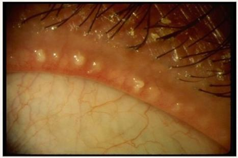

Part I · Blepharitis
Clinical picture of anterior blepharitis
Symptoms
- Burning sensation that is worse in the morning.
- Itching, lacrimation, photophobia and frequent falling of hair.
Signs
- Squamous blepharitis: greasy grayish white scales between the lashes.
- Ulcerative type: lashes are glued together by yellow crusts; when the crusts are removed they leave minute bleeding ulcers on the margin.

Greasy grayish-white scales at the base of the lashes